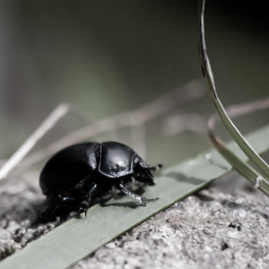
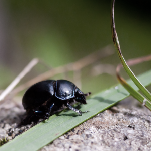

Desaturate QML Type
Reduces the saturation of the colors. More...
| Import Statement: | import QtGraphicalEffects 1.0 |
| Since: | QtGraphicalEffects 1.0 |
| Inherits: |
Properties
- cached : bool
- desaturation : real
- source : variant
Detailed Description
Desaturated pixel values are calculated as averages of the original RGB component values of the source item.
| Source | Effect applied |
|---|---|
|  |

Example
The following example shows how to apply the effect.
import QtQuick 2.0 import QtGraphicalEffects 1.0 Item { width: 300 height: 300 Image { id: bug source: "images/bug.jpg" sourceSize: Qt.size(parent.width, parent.height) smooth: true visible: false } Desaturate { anchors.fill: bug source: bug desaturation: 0.8 } }
Property Documentation
cached : bool |
This property allows the effect output pixels to be cached in order to improve the rendering performance.
Every time the source or effect properties are changed, the pixels in the cache must be updated. Memory consumption is increased, because an extra buffer of memory is required for storing the effect output.
It is recommended to disable the cache when the source or the effect properties are animated.
By default, the property is set to false.
desaturation : real |
This property defines how much the source colors are desaturated.
The value ranges from 0.0 (no change) to 1.0 (desaturated). By default, the property is set to 0.0 (no chnage).
| Output examples with different desaturation values | ||
|---|---|---|
 | ||
| desaturation: 0.0 | desaturation: 0.5 | desaturation: 1.0 |
source : variant |
This property defines the source item that provides the source pixels to the effect.
Note: It is not supported to let the effect include itself, for instance by setting source to the effect's parent.